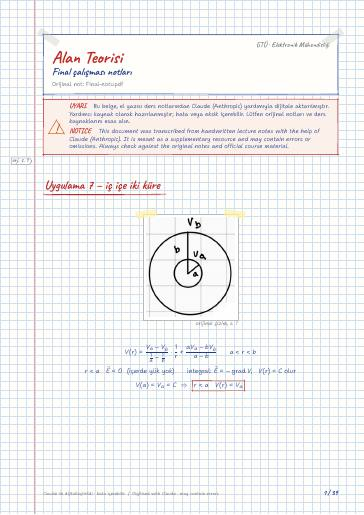

Elektromanyetik Alan Teorisi · Dijital ders notu
Final çalışması notları
- Ders
- Elektromanyetik Alan Teorisi (ELM341)
- Dönem
- 5. Dönem · 2023–2024 Güz
- Biçim
- PDF · 39 sayfa · 0,7 MB · el yazısı görünümlü LaTeX
- Orijinal not
- Final-notu.pdf

The digital notes were created from the handwritten notes with the help of Claude (Anthropic); they are meant as a supplementary resource and may contain errors. Always rely on the original notes and the official course materials.
Bu notta neler var?
- Uygulama 7 – iç içe iki küre
- Ders 9: Değişik türden yük dağılımları ve Dirac Distribüsyonu
- δ(x)'in özellikleri
- Uygulama 8 (sayfa 43)
- Ders 10
- Ders 11
- Yüzeysel yüke etki eden kuvvet
- Sayfa 55 problem 1
- Uygulama 9 – Görüntü Teorisi (sayfa 57)
- Ders 12
- 2.5.2 Dipol Dağılımları
- Ders 13
- Boş olmayan ortam
- Görüntü kavramı ve yöntemi
Notun metni
Düz metin olarak göster (formüller ve çizimler yoktur)
Uygulama 7 – iç içe iki küre
a yüzeyindeki yüke etkiyen kuvvet??
Ders 9: Değişik türden yük dağılımları ve Dirac Distribüsyonu
x=0 'da _s(y,z) [C/m^2] yük yoğunluğu olsun. Bu yüzeysel yük yoğunluğuna ilişkin hacimsel yük yoğunluğu:
1) a≤ x≤ b , c≤ y≤ d , e≤ z≤ f prizması içindeki toplam yük noktasal yükü için hacimsel yük yoğunluğu
O zaman ara bölgede:
düzlemler iletken olduğundan kapattığı bölgenin içinde olan elektrik alanı dışarıya geçirmez.
Silindirik koordinatlarda olursa silindirik koordinatlardaki uzunluk ^2=(x-x_0)^2+(y-y_0)^2 olmak üzere
iletkenlerin sadece yüzeyinde yük birikir
küre iletken olduğu için içinde yük birikmez, içerde Δ V=0
yük dağılımı sonlu ise sadece o bölgede geçerli olur.
Yüzeysel yüke etki eden kuvvet
q_1 — q_n tane yük olsun
q_1 yüküne etkiyen kuvvet
P noktasına etki eden kuvveti hesaplayalım. S_μ küresi dışında bulunan bütün yükleri içerdeki birim yüke etki kuvvet Elektrik Alan. Bu kuvvet hesaplayıp μ→0 'a götürürse P noktasındaki elektrik alanı bulunur
Şimdi yüklerin bir regüler S yüzeyi üzerine _s yoğunluğu ile dağılmış bulunduklarını düşünelim ve S üzerindeki bir P noktasında birim yüke etki eden E(P) kuvvetini hesaplamaya çalışalım.
P noktası üzerindeki elektrik alanı bulalım.
Daha basit bir yol bulmaya çalışalım
⇒ Herhangi bir _s ds yüzeysel yüküne etki eden kuvveti
b) kabuğun iç ve dış yüzeylerinde biriken yükler nedir?
kabuk iletken malzemeden yapıldığı için E=0, r(b,c)
kabuk nötr olduğundan dış yüzeyde Q_c=-Q_b=Q kadar yük toplanır
d) küçük küre konum değiştirirse Q_b 'nin dağılımı düzgün olmaktan çıkar, fakat toplam değeri asla değişmez. Tersine küçük küredeki Q yükü Q_b 'yi nötralize eder, sadece Q_c kalır ve düzgün yayılmıştır.
r>c için E eskisi gibidir
sadece _h 'nin etkisi var diyelim
a) alan parçasına etki eden kuvvet
Uygulama 9 – Görüntü Teorisi (sayfa 57)
Sonsuz uzun çizgisel yük dağılımı için
1) Denk problem çözülmeden sınır değerleri yazalım
Şimdi de denk problemden bakalım
M 'nin z>0 iken M_0 noktasında kaynaklanan potansiyel
z<0 bölgesinde ε_1=ε_2 olduğunu varsayarak M_0 'a bir q_1 yükü yerleştirerek denk problemi tanımlayalım
z=0 düzleminde biriken yükü bulalım
Boş olmayan ortam
Olayları yaratan dış yüklerin yoğunluğu olsun. Zamanla ortamın fiziksel varlığından ötürü iç yükler yer değiştirerek belirginleşir ve yarattığı alan E 'ye katkıda bulunur.
yüzey üzerinde potansiyel sabitse ve içerde yük yoksa iç bölgede potansiyel sabittir, elektrik alan da sabittir ve içerde =0
Görüntü kavramı ve yöntemi
z<0 bölgesi ( ε_2 dielektrik sabitli değil)
II'nci bölgede yük olmadığından ve z=0 yüzeyi üzerinde V=0 sabit olduğundan bölge iletkendir ve potansiyeli V_2=0 olur
z>0 bölgesi ( ε_1 dielektrik sabitli bölge)
I'nci bölge ise II gibi iletken bir bölge değil V_1≠0
(I) V_1 'in sağladığı diferansiyel denklem ve sınır koşul dikkate alınmalı:
Eşörnek problem: ( z>0 bölgesi bakımından)
Sadece tüm uzay homojense geçerli
yüzeyin üzerindeki yük 0 değildir ve değişkendir
q_1 başta vardı, q_2 uzaktan getirildi
3 tane yük var olsun
Bir kürenin kapasitesi